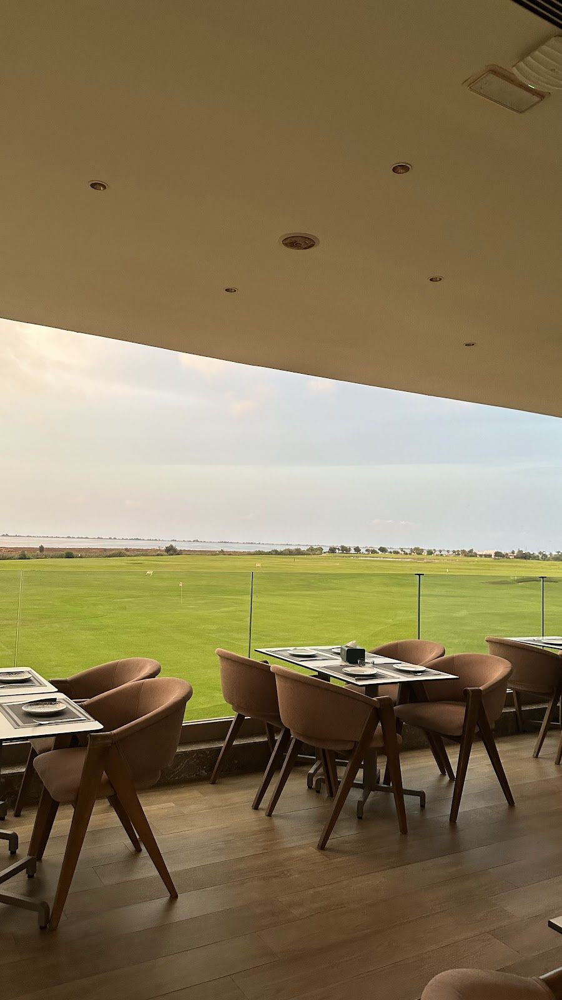
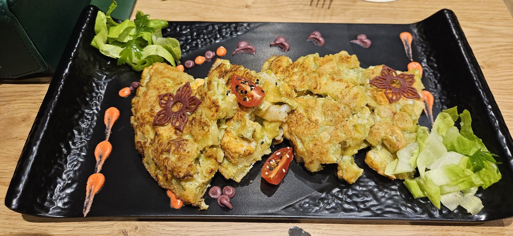
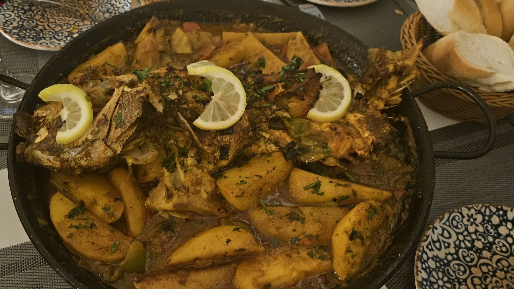
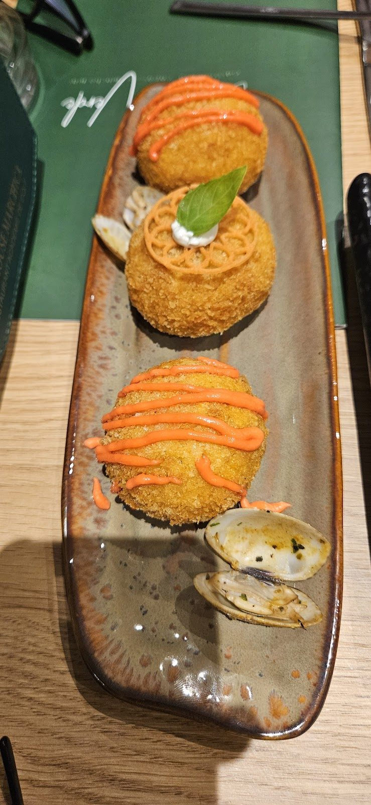
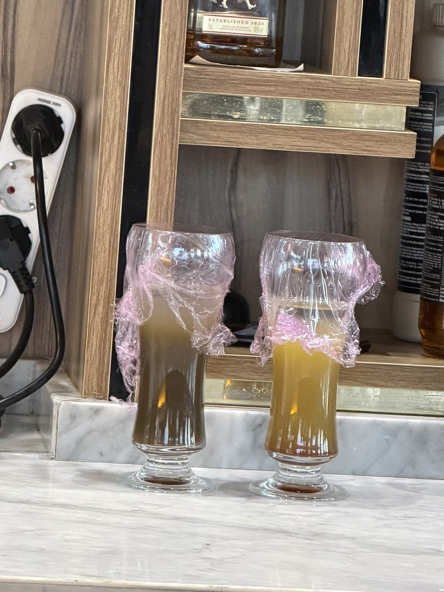
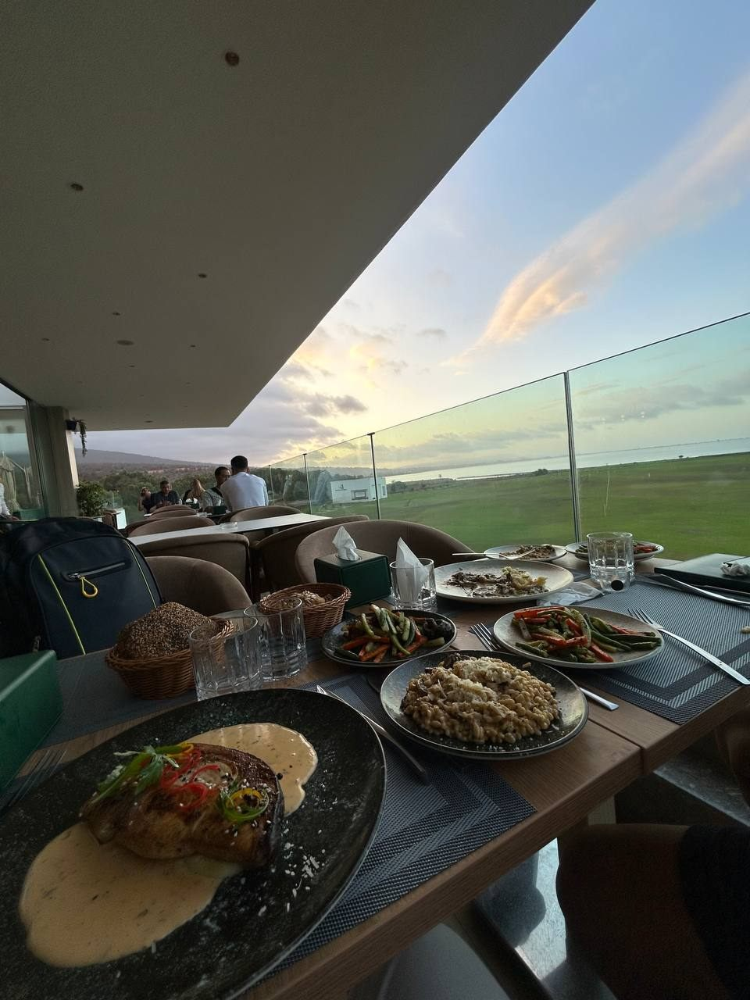
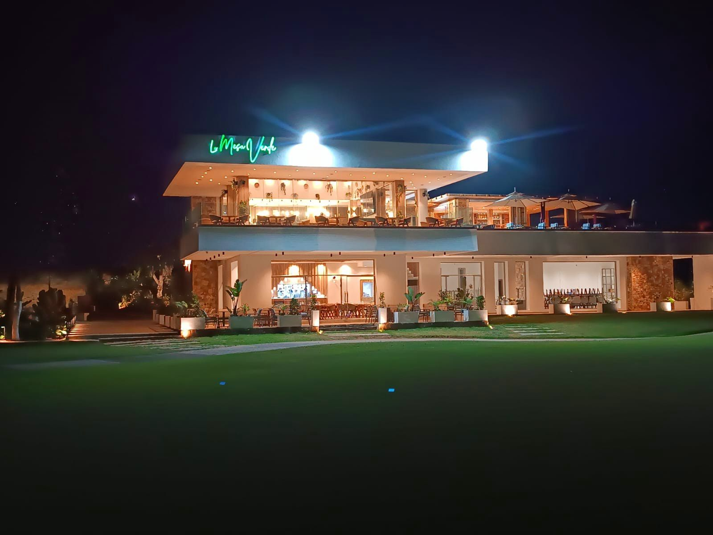
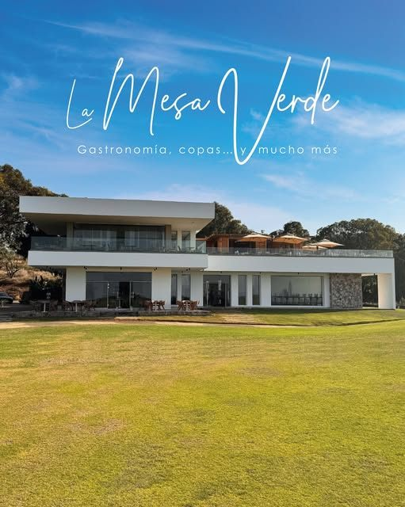
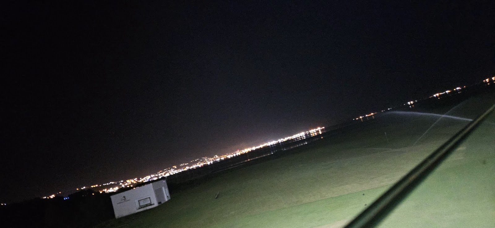

La Mesa Verde
L’Espagne à table, au bord de la lagune.
Gastronomie méditerranéenne, tapas et terrasse panoramique sur le green du golf d’Atalayoun.

Gastronomía, copas y mucho más
La devise inscrite sous leur logo. Tapas à partager, plats méditerranéens et cocktails sur la terrasse.




Choisissez votre mesa
Touchez une table sur le plan, choisissez l’heure et envoyez la demande. Plan indicatif : l’équipe confirme la place.

Le green jusqu’à l’horizon
Un bâtiment moderne et blanc, posé à côté de l’académie de golf de Marchica. La terrasse haute ouvre une vue panoramique sur le gazon, la lagune et le ciel du soir.


« Repetiría sin dudarlo »
Marchica, route N15, à côté du golf
- Horaires
- Tous les jours, de 9 h 30 à 1 h
- @lamesaverde.marchica
